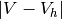
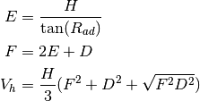
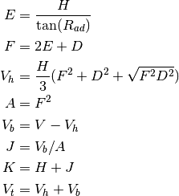
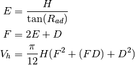
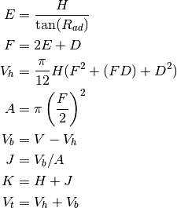

binvol – Hoppered Bin Design¶
Quirk: This doesn’t appear on any menu.
It makes sense, then, to simply combine this into binhop.
We’ll show the analysis here, but the implementation is in binhop – Hoppered Bins & Tanks.
Sample Output¶
HOPPERED BIN DESIGN by George Murphy
│«─── F ───»│
┌─»┌───────────┐«─┐
│ │ bin │ J
│ └───────────┘«─┤
M \ / │
│ \hopper / H
│ \ / │
└─────»└───┘«─────┘
│«D»│
Note that this diagram isn’t the same as the side-draw diagram in ref:construction.binhop.
Analysis¶
This is actually two simple calculators:
- Rectangular bins
- Cylindrical bins
In this case, the calculators differ by only two formulae: area and volume. This is case where a design function needs a simple plug-in for the volume calculation based on shape.
Rectangular¶
| V: | Required cubic capacity |
|---|---|
| DEG: | Hopper slope angle (degrees) |
| D: | Size of hopper opening D |
|---|---|
| H: | Hopper Height |
Locate H by approximation to minimize .

| M: | Desired height, greater than H |
|---|
Locate H by approximation to minimize .

Cylindrical¶
| V: | Required cubic capacity |
|---|---|
| DEG: | Hopper slope angle (degrees) |
| D: | Dia. of hopper opening D |
|---|---|
| H: | Hopper Height |
Locate H by approximation: minimize .

| M: | Desired height, greater than H |
|---|
Locate H by approximation to minimize .

| A: | Bin cross section area |
|---|---|
| F: | Top opening |
| D: | Bottom opening |
| J: | Bin height |
| H: | Hopper height |
| M: | Overall height |
Quirks¶
Is it H or M?
640 PRINT " Minimum height M=";H
650 PRINT " ENTER: Desired height greater than";H;:INPUT M
Also.
850 GOTO 720
860 END
If the END can’t be executed, why is it there?
This, too
1200 :REM'.....end
1210 GOSUB 1240:GOTO 70
1220 GOTO 70
Why is line 1220 there?